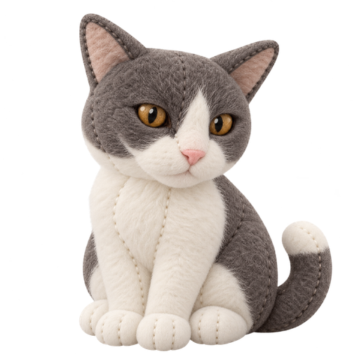

01 · Ev
Fotoğraftan ilham alan yaşam alanı
İleride ev fotoğrafı veya videosu, açık izin ve güvenli işlem koşulları sağlanırsa sanal ortama aktarılabilir.
Limon, oyun fikrinin durakları arasında ilerliyor. Bir eve bas; Limon da oraya sıçrasın. Harita, geliştirme planını anlatır. Oyun içi bir özellik olarak henüz çalışmıyor.

Karakter hareketi, kamera, dokunma tepkisi ve ilk yaşam alanı küçük bir prototipte sınanıyor.
Dünyanın parçaları
Bu alanlar ürün hedefi olarak tasarlanıyor; her biri aşama aşama değerlendirilecek.
01 · Ev
İleride ev fotoğrafı veya videosu, açık izin ve güvenli işlem koşulları sağlanırsa sanal ortama aktarılabilir.
02 · Gündelik hayat
Pet shopta yaşayan kediler ve farklı mama seçenekleri ilk sürüm hedefi içinde değerlendiriliyor.
03 · Misafirlik
Fikir aşamasında: Limon’un farklı oyunculara rastgele aralıklarla uğraması. Sıklık ve bildirim izne bağlı olacak.
04 · Sesli anı
30 saniyeye kadar sesli anı fikri; yalnızca açık onay, saklama süresi ve güvenlik tasarımı netleşirse değerlendirilecek.